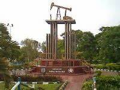

Sejarah

Nama "Duri" diyakini berasal dari banyaknya tumbuhan berduri yang dulu tumbuh di wilayah tersebut. Ketika daerah ini belum berkembang seperti sekarang, vegetasinya didominasi oleh tanaman-tanaman liar yang memiliki duri, sehingga nama itu melekat sebagai penanda lokasi.
Dalam beberapa cerita rakyat, nama Duri juga mungkin berasal dari kisah-kisah penduduk setempat di masa lalu. Nama ini bisa saja berasal dari sebuah peristiwa atau tokoh tertentu yang dikaitkan dengan kata "duri." Namun, detail cerita tradisional ini seringkali tidak terdokumentasi secara formal.
Seiring waktu, Duri berkembang menjadi kota penting karena eksplorasi minyak bumi dan perkebunan kelapa sawit. Walaupun asal nama tidak terkait langsung dengan industri ini, keberadaan perkebunan dan vegetasi berduri mungkin semakin menguatkan kaitannya.
Kondisi Geografis
.jpeg)
Kota Duri, yang terletak di Kecamatan Mandau, Kabupaten Bengkalis, Provinsi Riau, berada di dataran rendah Sumatera Timur dengan posisi strategis di Jalur Lintas Sumatera yang menghubungkan Dumai dan Pekanbaru. Kota ini dikenal sebagai salah satu pusat produksi minyak mentah Indonesia melalui ladang minyak Duri, yang telah beroperasi sejak 1950-an dan menyumbang sekitar 60% dari total produksi minyak mentah nasional. Selain sektor minyak, potensi daerah Duri meliputi perkebunan kelapa sawit, karet, peternakan, serta industri kecil menengah. Kota ini memiliki infrastruktur modern, seperti pusat perbelanjaan, fasilitas kesehatan, masjid raya, dan berbagai fasilitas penunjang lain yang berkembang pesat, terutama di sekitar Jalan Jenderal Sudirman dan Jalan Hang Tuah sebagai pusat aktivitas ekonomi dan pertumbuhan baru.
Keunikan

Kota Duri di Kabupaten Bengkalis, Riau, memiliki keunikan sebagai pusat produksi minyak terbesar di Indonesia, dengan teknologi Duri Steam Flood (DSF) yang menjadi salah satu operasi injeksi uap panas terbesar di dunia, simbolnya terlihat pada Monumen Pompa Angguk yang mencatat pencapaian produksi jutaan barel minyak. Selain itu, keindahan Danau Ali dengan tradisi menangkap ikan secara tradisional menjadi daya tarik unik, ditambah lokasinya yang strategis di Jalur Lintas Sumatera, menjadikan Duri kota transit yang berkembang pesat. Kota ini juga kaya akan keberagaman budaya dari masyarakat multietnis, menciptakan kehidupan yang dinamis dan berwarna
informasi selengkapnya->Wikipedia.com
Hubungi Kami Di